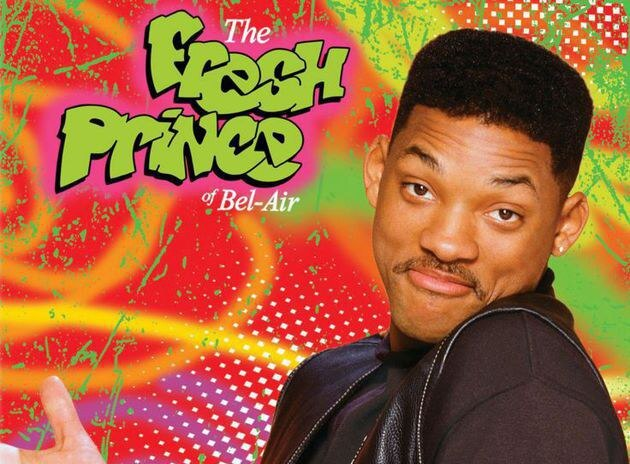

Após arrumar confusão com pessoas perigosas de seu bairro, na Filadélfia, a mãe de Will, temendo pelo futuro de seu filho, resolve mandá-lo para viver com sua irmã Vivian (Janet Hubert-Whitten) e seu cunhado Philip (James Avery), um advogado que se tornou juiz e tem uma vida muita bem sucedida.


Seis jovens são unidos por laços familiares, românticos e, principalmente, de amizade, enquanto tentam vingar em Nova York. Rachel é a garota mimada que deixa o noivo no altar para viver com a amiga dos tempos de escola Monica, sistemática e apaixonada pela culinária.